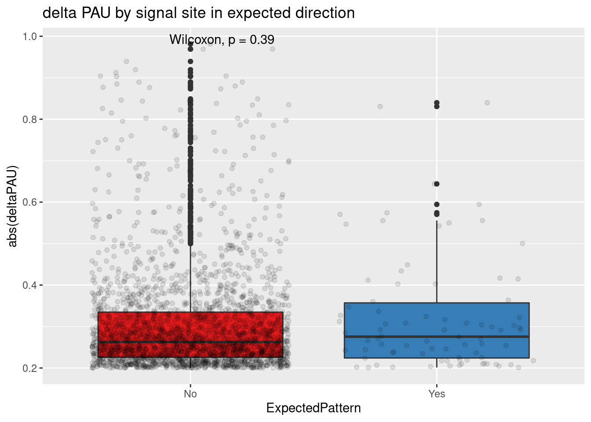
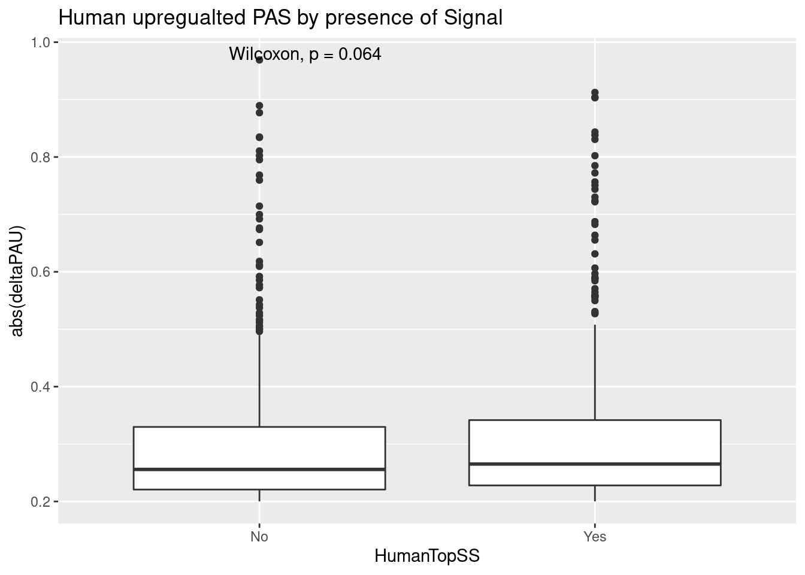

Last updated: 2020-07-25
Checks: 7 0
Knit directory: Comparative_APA/analysis/
This reproducible R Markdown analysis was created with workflowr (version 1.6.2). The Checks tab describes the reproducibility checks that were applied when the results were created. The Past versions tab lists the development history.
Great! Since the R Markdown file has been committed to the Git repository, you know the exact version of the code that produced these results.
Great job! The global environment was empty. Objects defined in the global environment can affect the analysis in your R Markdown file in unknown ways. For reproduciblity it’s best to always run the code in an empty environment.
The command set.seed(20190902) was run prior to running the code in the R Markdown file. Setting a seed ensures that any results that rely on randomness, e.g. subsampling or permutations, are reproducible.
Great job! Recording the operating system, R version, and package versions is critical for reproducibility.
Nice! There were no cached chunks for this analysis, so you can be confident that you successfully produced the results during this run.
Great job! Using relative paths to the files within your workflowr project makes it easier to run your code on other machines.
Great! You are using Git for version control. Tracking code development and connecting the code version to the results is critical for reproducibility.
The results in this page were generated with repository version dc22f17. See the Past versions tab to see a history of the changes made to the R Markdown and HTML files.
Note that you need to be careful to ensure that all relevant files for the analysis have been committed to Git prior to generating the results (you can use wflow_publish or wflow_git_commit). workflowr only checks the R Markdown file, but you know if there are other scripts or data files that it depends on. Below is the status of the Git repository when the results were generated:
Ignored files:
Ignored: .DS_Store
Ignored: .Rhistory
Ignored: .Rproj.user/
Ignored: code/chimp_log/
Ignored: code/human_log/
Ignored: data/.DS_Store
Ignored: data/TrialFiltersMeta.txt.sb-9845453e-R58Y0Q/
Ignored: data/mediation_prot/
Ignored: data/metadata_HCpanel.txt.sb-284518db-RGf0kd/
Ignored: data/metadata_HCpanel.txt.sb-a5794dd2-i594qs/
Ignored: output/.DS_Store
Untracked files:
Untracked: ._.DS_Store
Untracked: Chimp/
Untracked: GEO/
Untracked: Human/
Untracked: analysis/ALUelements.Rmd
Untracked: analysis/AREstabilityScores.Rmd
Untracked: analysis/AllLoc_effectSizeCor.Rmd
Untracked: analysis/Conservation_bydAPAset.Rmd
Untracked: analysis/CrossChimpThreePrime.Rmd
Untracked: analysis/DiffTransProtvsExpression.Rmd
Untracked: analysis/DiffUsedUTR.Rmd
Untracked: analysis/GvizPlots.Rmd
Untracked: analysis/HandC.TvN
Untracked: analysis/PhenotypeOverlap10.Rmd
Untracked: analysis/ResultsNoUnlifted.md
Untracked: analysis/SuppTables.Rmd
Untracked: analysis/annotationBias.Rmd
Untracked: analysis/assessReadQual.Rmd
Untracked: analysis/diffExpressionPantro6.Rmd
Untracked: analysis/isoformdivandexp.Rmd
Untracked: code/._AlignmentScores.sh
Untracked: code/._BothFCMM.sh
Untracked: code/._BothFCMMPrim.sh
Untracked: code/._BothFCnewOInclusive.sh
Untracked: code/._ChimpStarMM2.sh
Untracked: code/._ClassifyLeafviz.sh
Untracked: code/._ClosestorthoEx.sh
Untracked: code/._Config_chimp.yaml
Untracked: code/._Config_chimp_full.yaml
Untracked: code/._Config_human.yaml
Untracked: code/._ConvertJunc2Bed.sh
Untracked: code/._CountNucleotides.py
Untracked: code/._CrossMapChimpRNA.sh
Untracked: code/._CrossMapThreeprime.sh
Untracked: code/._DiffSplice.sh
Untracked: code/._DiffSplicePlots.sh
Untracked: code/._DiffSplicePlots_gencode.sh
Untracked: code/._DiffSplice_gencode.sh
Untracked: code/._DiffSplice_removebad.sh
Untracked: code/._Filter255MM.sh
Untracked: code/._FilterPrimSec.sh
Untracked: code/._FindIntronForDomPAS.sh
Untracked: code/._FindIntronForDomPAS_DF.sh
Untracked: code/._GetMAPQscore.py
Untracked: code/._GetSecondaryMap.py
Untracked: code/._Lift5perPAS.sh
Untracked: code/._LiftFinalChimpJunc2Human.sh
Untracked: code/._LiftOrthoPAS2chimp.sh
Untracked: code/._MapBadSamples.sh
Untracked: code/._MismatchNumbers.sh
Untracked: code/._PAS_ATTAAA.sh
Untracked: code/._PAS_ATTAAA_df.sh
Untracked: code/._PAS_seqExpanded.sh
Untracked: code/._PASsequences.sh
Untracked: code/._PASsequences_DF.sh
Untracked: code/._PlotNuclearUsagebySpecies.R
Untracked: code/._PlotNuclearUsagebySpecies_DF.R
Untracked: code/._QuantMergedClusters.sh
Untracked: code/._RNATranscriptDTplot.sh
Untracked: code/._ReverseLiftFilter.R
Untracked: code/._RunFixLeafCluster.sh
Untracked: code/._RunNegMCMediation.sh
Untracked: code/._RunNegMCMediationDF.sh
Untracked: code/._RunPosMCMediationDF.err
Untracked: code/._RunPosMCMediationDF.sh
Untracked: code/._SAF2Bed.py
Untracked: code/._Snakefile
Untracked: code/._SnakefilePAS
Untracked: code/._SnakefilePASfilt
Untracked: code/._SortIndexBadSamples.sh
Untracked: code/._StarMM2.sh
Untracked: code/._TestFC.sh
Untracked: code/._assignPeak2Intronicregion
Untracked: code/._assignPeak2Intronicregion.sh
Untracked: code/._bed215upbed.py
Untracked: code/._bed2Bedbothstrand.py
Untracked: code/._bed2SAF_gen.py
Untracked: code/._buildIndecpantro5
Untracked: code/._buildIndecpantro5.sh
Untracked: code/._buildLeafviz.sh
Untracked: code/._buildLeafviz_leadAnno.sh
Untracked: code/._buildStarIndex.sh
Untracked: code/._chimpChromprder.sh
Untracked: code/._chimpMultiCov.sh
Untracked: code/._chimpMultiCov255.sh
Untracked: code/._chimpMultiCovInclusive.sh
Untracked: code/._chooseSignalSite.py
Untracked: code/._cleanbed2saf.py
Untracked: code/._cluster.json
Untracked: code/._cluster2bed.py
Untracked: code/._clusterLiftReverse.sh
Untracked: code/._clusterLiftReverse_removebad.sh
Untracked: code/._clusterLiftprimary.sh
Untracked: code/._clusterLiftprimary_removebad.sh
Untracked: code/._converBam2Junc.sh
Untracked: code/._converBam2Junc_removeBad.sh
Untracked: code/._extraSnakefiltpas
Untracked: code/._extractPhyloReg.py
Untracked: code/._extractPhyloRegGene.py
Untracked: code/._extractPhylopGeneral.ph
Untracked: code/._extractPhylopGeneral.py
Untracked: code/._extractPhylopReg200down.py
Untracked: code/._extractPhylopReg200up.py
Untracked: code/._filter5percPAS.py
Untracked: code/._filterNumChroms.py
Untracked: code/._filterPASforMP.py
Untracked: code/._filterPostLift.py
Untracked: code/._filterPrimaryread.py
Untracked: code/._filterSecondaryread.py
Untracked: code/._fixExonFC.py
Untracked: code/._fixFCheadforExp.py
Untracked: code/._fixLeafCluster.py
Untracked: code/._fixLiftedJunc.py
Untracked: code/._fixUTRexonanno.py
Untracked: code/._formathg38Anno.py
Untracked: code/._formatpantro6Anno.py
Untracked: code/._getRNAseqMapStats.sh
Untracked: code/._hg19MapStats.sh
Untracked: code/._humanChromorder.sh
Untracked: code/._humanMultiCov.sh
Untracked: code/._humanMultiCov255.sh
Untracked: code/._humanMultiCov_inclusive.sh
Untracked: code/._intersectLiftedPAS.sh
Untracked: code/._liftJunctionFiles.sh
Untracked: code/._liftPAS19to38.sh
Untracked: code/._liftedchimpJunc2human.sh
Untracked: code/._makeNuclearDapaplots.sh
Untracked: code/._makeNuclearDapaplots_DF.sh
Untracked: code/._makeSamplyGroupsHuman_TvN.py
Untracked: code/._mapRNAseqhg19.sh
Untracked: code/._mapRNAseqhg19_newPipeline.sh
Untracked: code/._maphg19.sh
Untracked: code/._maphg19_subjunc.sh
Untracked: code/._mediation_test.R
Untracked: code/._mergeChimp3prime_inhg38.sh
Untracked: code/._mergeandBWRNAseq.sh
Untracked: code/._mergedBam2BW.sh
Untracked: code/._nameClusters.py
Untracked: code/._negativeMediation_montecarlo.R
Untracked: code/._negativeMediation_montecarloDF.R
Untracked: code/._numMultimap.py
Untracked: code/._overlapMMandOrthoexon.sh
Untracked: code/._overlapPASandOrthoexon.sh
Untracked: code/._overlapapaQTLPAS.sh
Untracked: code/._parseHg38.py
Untracked: code/._postiveMediation_montecarlo_DF.R
Untracked: code/._prepareCleanLiftedFC_5perc4LC.py
Untracked: code/._prepareLeafvizAnno.sh
Untracked: code/._preparePAS4lift.py
Untracked: code/._primaryLift.sh
Untracked: code/._processhg38exons.py
Untracked: code/._quantJunc.sh
Untracked: code/._quantJunc_TEST.sh
Untracked: code/._quantJunc_removeBad.sh
Untracked: code/._quantLiftedPASPrimary.sh
Untracked: code/._quantMerged_seperatly.sh
Untracked: code/._recLiftchim2human.sh
Untracked: code/._revLiftPAShg38to19.sh
Untracked: code/._reverseLift.sh
Untracked: code/._runCheckReverseLift.sh
Untracked: code/._runChimpDiffIso.sh
Untracked: code/._runCountNucleotides.sh
Untracked: code/._runFilterNumChroms.sh
Untracked: code/._runHumanDiffIso.sh
Untracked: code/._runNuclearDiffIso_DF.sh
Untracked: code/._runNuclearDifffIso.sh
Untracked: code/._runTotalDiffIso.sh
Untracked: code/._run_chimpverifybam.sh
Untracked: code/._run_verifyBam.sh
Untracked: code/._snakemake.batch
Untracked: code/._snakemakePAS.batch
Untracked: code/._snakemakePASchimp.batch
Untracked: code/._snakemakePAShuman.batch
Untracked: code/._snakemake_chimp.batch
Untracked: code/._snakemake_human.batch
Untracked: code/._snakemakefiltPAS.batch
Untracked: code/._snakemakefiltPAS_chimp
Untracked: code/._snakemakefiltPAS_chimp.sh
Untracked: code/._snakemakefiltPAS_human.sh
Untracked: code/._spliceSite2Fasta.py
Untracked: code/._submit-snakemake-chimp.sh
Untracked: code/._submit-snakemake-human.sh
Untracked: code/._submit-snakemakePAS-chimp.sh
Untracked: code/._submit-snakemakePAS-human.sh
Untracked: code/._submit-snakemakefiltPAS-chimp.sh
Untracked: code/._submit-snakemakefiltPAS-human.sh
Untracked: code/._subset_diffisopheno_Nuclear_HvC.py
Untracked: code/._subset_diffisopheno_Nuclear_HvC_DF.py
Untracked: code/._subset_diffisopheno_Total_HvC.py
Untracked: code/._threeprimeOrthoFC.sh
Untracked: code/._transcriptDTplotsNuclear.sh
Untracked: code/._verifyBam4973.sh
Untracked: code/._verifyBam4973inHuman.sh
Untracked: code/._wrap_chimpverifybam.sh
Untracked: code/._wrap_verifyBam.sh
Untracked: code/._writeMergecode.py
Untracked: code/.snakemake/
Untracked: code/ALLPAS_sequenceDF.err
Untracked: code/ALLPAS_sequenceDF.out
Untracked: code/AlignmentScores.err
Untracked: code/AlignmentScores.out
Untracked: code/AlignmentScores.sh
Untracked: code/BothFCMM.err
Untracked: code/BothFCMM.out
Untracked: code/BothFCMM.sh
Untracked: code/BothFCMMPrim.err
Untracked: code/BothFCMMPrim.out
Untracked: code/BothFCMMPrim.sh
Untracked: code/BothFCnewOInclusive.sh
Untracked: code/BothFCnewOInclusive.sh.err
Untracked: code/BothFCnewOInclusive.sh.out
Untracked: code/ChimpStarMM2.err
Untracked: code/ChimpStarMM2.out
Untracked: code/ChimpStarMM2.sh
Untracked: code/ClassifyLeafviz.sh
Untracked: code/ClosestorthoEx.err
Untracked: code/ClosestorthoEx.out
Untracked: code/ClosestorthoEx.sh
Untracked: code/Config_chimp.yaml
Untracked: code/Config_chimp_full.yaml
Untracked: code/Config_human.yaml
Untracked: code/ConvertJunc2Bed.err
Untracked: code/ConvertJunc2Bed.out
Untracked: code/ConvertJunc2Bed.sh
Untracked: code/CountNucleotides.py
Untracked: code/CrossMapChimpRNA.sh
Untracked: code/CrossMapThreeprime.sh
Untracked: code/CrossmapChimp3prime.err
Untracked: code/CrossmapChimp3prime.out
Untracked: code/CrossmapChimpRNA.err
Untracked: code/CrossmapChimpRNA.out
Untracked: code/DTUTR.sh
Untracked: code/DiffDom_RNAmotif_4.err
Untracked: code/DiffDom_RNAmotif_4.out
Untracked: code/DiffDom_RNAmotif_4.sh
Untracked: code/DiffDom_RNAmotif_4_splitDE.err
Untracked: code/DiffDom_RNAmotif_4_splitDE.out
Untracked: code/DiffDom_RNAmotif_4_splitDE.sh
Untracked: code/DiffSplice.err
Untracked: code/DiffSplice.out
Untracked: code/DiffSplice.sh
Untracked: code/DiffSplicePlots.err
Untracked: code/DiffSplicePlots.out
Untracked: code/DiffSplicePlots.sh
Untracked: code/DiffSplicePlots_gencode.sh
Untracked: code/DiffSplice_gencode.sh
Untracked: code/DiffSplice_removebad.err
Untracked: code/DiffSplice_removebad.out
Untracked: code/DiffSplice_removebad.sh
Untracked: code/Filter255.err
Untracked: code/Filter255.out
Untracked: code/Filter255MM.sh
Untracked: code/FilterPrimSec.err
Untracked: code/FilterPrimSec.out
Untracked: code/FilterPrimSec.sh
Untracked: code/FilterReverseLift.err
Untracked: code/FilterReverseLift.out
Untracked: code/FindDomXCutoff.py
Untracked: code/FindIntronForDomPAS.err
Untracked: code/FindIntronForDomPAS.out
Untracked: code/FindIntronForDomPAS.sh
Untracked: code/FindIntronForDomPAS_DF.sh
Untracked: code/GencodeDiffSplice.err
Untracked: code/GencodeDiffSplice.out
Untracked: code/GetMAPQscore.py
Untracked: code/GetSecondaryMap.py
Untracked: code/GetTopminus2Usage.py
Untracked: code/H3K36me3DTplot.err
Untracked: code/H3K36me3DTplot.out
Untracked: code/H3K36me3DTplot.sh
Untracked: code/H3K36me3DTplot_DiffIso.err
Untracked: code/H3K36me3DTplot_DiffIso.out
Untracked: code/H3K36me3DTplot_DiffIso.sh
Untracked: code/H3K36me3DTplot_Specific.err
Untracked: code/H3K36me3DTplot_Specific.out
Untracked: code/H3K36me3DTplot_Specific.sh
Untracked: code/H3K36me3DTplot_distalPAS.err
Untracked: code/H3K36me3DTplot_distalPAS.out
Untracked: code/H3K36me3DTplot_distalPAS.sh
Untracked: code/H3K36me3DTplot_transcript.err
Untracked: code/H3K36me3DTplot_transcript.out
Untracked: code/H3K36me3DTplot_transcript.sh
Untracked: code/H3K36me3DTplotwide.err
Untracked: code/H3K36me3DTplotwide.out
Untracked: code/H3K36me3DTplotwide.sh
Untracked: code/H3K9me3DTplot_transcript.err
Untracked: code/H3K9me3DTplot_transcript.out
Untracked: code/H3K9me3DTplot_transcript.sh
Untracked: code/H3K9me3_processandDT.sh
Untracked: code/HchromOrder.err
Untracked: code/HchromOrder.out
Untracked: code/InfoContentShannon.py
Untracked: code/InfoContentbyInd.py
Untracked: code/IntersectMMandOrtho.err
Untracked: code/IntersectMMandOrtho.out
Untracked: code/IntersectPASandOrtho.err
Untracked: code/IntersectPASandOrtho.out
Untracked: code/JunctionLift.err
Untracked: code/JunctionLift.out
Untracked: code/JunctionLiftFinalChimp.err
Untracked: code/JunctionLiftFinalChimp.out
Untracked: code/Lift5perPAS.sh
Untracked: code/Lift5perPASbed.err
Untracked: code/Lift5perPASbed.out
Untracked: code/LiftClustersFirst.err
Untracked: code/LiftClustersFirst.out
Untracked: code/LiftClustersFirst_remove.err
Untracked: code/LiftClustersFirst_remove.out
Untracked: code/LiftClustersSecond.err
Untracked: code/LiftClustersSecond.out
Untracked: code/LiftClustersSecond_remove.err
Untracked: code/LiftClustersSecond_remove.out
Untracked: code/LiftFinalChimpJunc2Human.sh
Untracked: code/LiftOrthoPAS2chimp.sh
Untracked: code/LiftorthoPAS.err
Untracked: code/LiftorthoPASt.out
Untracked: code/Log.out
Untracked: code/MapBadSamples.err
Untracked: code/MapBadSamples.out
Untracked: code/MapBadSamples.sh
Untracked: code/MapStats.err
Untracked: code/MapStats.out
Untracked: code/MaxEntCode/
Untracked: code/MergeClusters.err
Untracked: code/MergeClusters.out
Untracked: code/MergeClusters.sh
Untracked: code/MismatchNumbers.err
Untracked: code/MismatchNumbers.out
Untracked: code/MismatchNumbers.sh
Untracked: code/NuclearDTUTR.err
Untracked: code/NuclearDTUTRt.out
Untracked: code/NuclearPlotsDEandDiffDom_4.err
Untracked: code/NuclearPlotsDEandDiffDom_4.out
Untracked: code/NuclearPlotsDEandDiffDom_4.sh
Untracked: code/PAS_ATTAAA.err
Untracked: code/PAS_ATTAAA.out
Untracked: code/PAS_ATTAAA.sh
Untracked: code/PAS_ATTAAADF.err
Untracked: code/PAS_ATTAAADF.out
Untracked: code/PAS_ATTAAA_df.sh
Untracked: code/PAS_seqExpanded.sh
Untracked: code/PAS_sequence.err
Untracked: code/PAS_sequence.out
Untracked: code/PAS_sequenceDF.err
Untracked: code/PAS_sequenceDF.out
Untracked: code/PASexpanded_sequenceDF.err
Untracked: code/PASexpanded_sequenceDF.out
Untracked: code/PASsequences.sh
Untracked: code/PASsequences_DF.sh
Untracked: code/PlotNuclearUsagebySpecies.R
Untracked: code/PlotNuclearUsagebySpecies_DF.R
Untracked: code/PlotNuclearUsagebySpecies_DF_4DIC.R
Untracked: code/PlotNuclearUsagebySpecies_DF_DEout.R
Untracked: code/QuantMergeClusters
Untracked: code/QuantMergeClusters.err
Untracked: code/QuantMergeClusters.out
Untracked: code/QuantMergedClusters.sh
Untracked: code/RNATranscriptDTplot.err
Untracked: code/RNATranscriptDTplot.out
Untracked: code/RNATranscriptDTplot.sh
Untracked: code/RNAmotif_PAS.err
Untracked: code/RNAmotif_PAS.out
Untracked: code/RNAmotif_PAS.sh
Untracked: code/RNAmotif_PAS_chimp.err
Untracked: code/RNAmotif_PAS_chimp.out
Untracked: code/RNAmotif_PAS_chimp.sh
Untracked: code/Rev_liftoverPAShg19to38.err
Untracked: code/Rev_liftoverPAShg19to38.out
Untracked: code/ReverseLiftFilter.R
Untracked: code/RunFixCluster.err
Untracked: code/RunFixCluster.out
Untracked: code/RunFixLeafCluster.sh
Untracked: code/RunNegMCMediation.err
Untracked: code/RunNegMCMediation.sh
Untracked: code/RunNegMCMediationDF.err
Untracked: code/RunNegMCMediationDF.out
Untracked: code/RunNegMCMediationDF.sh
Untracked: code/RunNegMCMediationr.out
Untracked: code/RunNewDom.err
Untracked: code/RunNewDom.out
Untracked: code/RunPosMCMediation.err
Untracked: code/RunPosMCMediation.sh
Untracked: code/RunPosMCMediationDF.err
Untracked: code/RunPosMCMediationDF.out
Untracked: code/RunPosMCMediationDF.sh
Untracked: code/RunPosMCMediationr.out
Untracked: code/SAF215upbed_gen.py
Untracked: code/SAF2Bed.py
Untracked: code/Snakefile
Untracked: code/SnakefilePAS
Untracked: code/SnakefilePASfilt
Untracked: code/SortIndexBadSamples.err
Untracked: code/SortIndexBadSamples.out
Untracked: code/SortIndexBadSamples.sh
Untracked: code/StarMM2.err
Untracked: code/StarMM2.out
Untracked: code/StarMM2.sh
Untracked: code/TestFC.err
Untracked: code/TestFC.out
Untracked: code/TestFC.sh
Untracked: code/TotalTranscriptDTplot.err
Untracked: code/TotalTranscriptDTplot.out
Untracked: code/UTR2FASTA.py
Untracked: code/Upstream10Bases_general.py
Untracked: code/allPASSeq_df.sh
Untracked: code/apaQTLsnake.err
Untracked: code/apaQTLsnake.out
Untracked: code/apaQTLsnakePAS.err
Untracked: code/apaQTLsnakePAS.out
Untracked: code/apaQTLsnakePAShuman.err
Untracked: code/apaQTLsnakefiltPAS.err
Untracked: code/apaQTLsnakefiltPAS.out
Untracked: code/assignPeak2Intronicregion.err
Untracked: code/assignPeak2Intronicregion.out
Untracked: code/assignPeak2Intronicregion.sh
Untracked: code/bam2junc.err
Untracked: code/bam2junc.out
Untracked: code/bam2junc_remove.err
Untracked: code/bam2junc_remove.out
Untracked: code/bed215upbed.py
Untracked: code/bed2Bedbothstrand.py
Untracked: code/bed2SAF_gen.py
Untracked: code/bed2saf.py
Untracked: code/bg_to_cov.py
Untracked: code/buildIndecpantro5
Untracked: code/buildIndecpantro5.sh
Untracked: code/buildLeafviz.err
Untracked: code/buildLeafviz.out
Untracked: code/buildLeafviz.sh
Untracked: code/buildLeafviz_leadAnno.sh
Untracked: code/buildLeafviz_leafanno.err
Untracked: code/buildLeafviz_leafanno.out
Untracked: code/buildStarIndex.sh
Untracked: code/callPeaksYL.py
Untracked: code/chimpChromprder.sh
Untracked: code/chimpMultiCov.err
Untracked: code/chimpMultiCov.out
Untracked: code/chimpMultiCov.sh
Untracked: code/chimpMultiCov255.sh
Untracked: code/chimpMultiCovInclusive.err
Untracked: code/chimpMultiCovInclusive.out
Untracked: code/chimpMultiCovInclusive.sh
Untracked: code/chooseAnno2Bed.py
Untracked: code/chooseAnno2SAF.py
Untracked: code/chooseSignalSite.py
Untracked: code/chromOrder.err
Untracked: code/chromOrder.out
Untracked: code/classifyLeafviz.err
Untracked: code/classifyLeafviz.out
Untracked: code/cleanbed2saf.py
Untracked: code/cluster.json
Untracked: code/cluster2bed.py
Untracked: code/clusterLiftReverse.sh
Untracked: code/clusterLiftReverse_removebad.sh
Untracked: code/clusterLiftprimary.sh
Untracked: code/clusterLiftprimary_removebad.sh
Untracked: code/clusterPAS.json
Untracked: code/clusterfiltPAS.json
Untracked: code/comands2Mege.sh
Untracked: code/converBam2Junc.sh
Untracked: code/converBam2Junc_removeBad.sh
Untracked: code/convertNumeric.py
Untracked: code/extraSnakefiltpas
Untracked: code/extractPhaastConGeneral.py
Untracked: code/extractPhyloReg.py
Untracked: code/extractPhyloRegGene.py
Untracked: code/extractPhylopGeneral.py
Untracked: code/extractPhylopReg200down.py
Untracked: code/extractPhylopReg200up.py
Untracked: code/filter5perc.R
Untracked: code/filter5percPAS.py
Untracked: code/filter5percPheno.py
Untracked: code/filterBamforMP.pysam2_gen.py
Untracked: code/filterJuncChroms.err
Untracked: code/filterJuncChroms.out
Untracked: code/filterMissprimingInNuc10_gen.py
Untracked: code/filterNumChroms.py
Untracked: code/filterPASforMP.py
Untracked: code/filterPostLift.py
Untracked: code/filterPrimaryread.py
Untracked: code/filterSAFforMP_gen.py
Untracked: code/filterSecondaryread.py
Untracked: code/filterSortBedbyCleanedBed_gen.R
Untracked: code/filterpeaks.py
Untracked: code/fixExonFC.py
Untracked: code/fixFChead.py
Untracked: code/fixFChead_bothfrac.py
Untracked: code/fixFCheadforExp.py
Untracked: code/fixLeafCluster.py
Untracked: code/fixLiftedJunc.py
Untracked: code/fixUTRexonanno.py
Untracked: code/formathg38Anno.py
Untracked: code/generateStarIndex.err
Untracked: code/generateStarIndex.out
Untracked: code/generateStarIndexHuman.err
Untracked: code/generateStarIndexHuman.out
Untracked: code/getAlloverlap.py
Untracked: code/getRNAseqMapStats.sh
Untracked: code/hg19MapStats.err
Untracked: code/hg19MapStats.out
Untracked: code/hg19MapStats.sh
Untracked: code/humanChromorder.sh
Untracked: code/humanFiles
Untracked: code/humanMultiCov.err
Untracked: code/humanMultiCov.out
Untracked: code/humanMultiCov.sh
Untracked: code/humanMultiCov255.err
Untracked: code/humanMultiCov255.out
Untracked: code/humanMultiCov255.sh
Untracked: code/humanMultiCovInclusive.err
Untracked: code/humanMultiCovInclusive.out
Untracked: code/humanMultiCov_inclusive.sh
Untracked: code/infoContentSimpson.py
Untracked: code/intersectAnno.err
Untracked: code/intersectAnno.out
Untracked: code/intersectAnnoExt.err
Untracked: code/intersectAnnoExt.out
Untracked: code/intersectLiftedPAS.sh
Untracked: code/leafcutter_merge_regtools_redo.py
Untracked: code/liftJunctionFiles.sh
Untracked: code/liftPAS19to38.sh
Untracked: code/liftVCF.out
Untracked: code/liftVCF.sh
Untracked: code/liftoverPAShg19to38.err
Untracked: code/liftoverPAShg19to38.out
Untracked: code/lliftVCF.err
Untracked: code/log/
Untracked: code/make5percPeakbed.py
Untracked: code/makeDIC.err
Untracked: code/makeDIC.out
Untracked: code/makeFileID.py
Untracked: code/makeNuclearDapaplots.sh
Untracked: code/makeNuclearDapaplots_DF.sh
Untracked: code/makeNuclearPlots.err
Untracked: code/makeNuclearPlots.out
Untracked: code/makeNuclearPlotsDF.err
Untracked: code/makeNuclearPlotsDF.out
Untracked: code/makePheno.py
Untracked: code/makeSamplyGroupsChimp_TvN.py
Untracked: code/makeSamplyGroupsHuman_TvN.py
Untracked: code/makedICPlots_DF.sh
Untracked: code/mapRNAseqhg19.sh
Untracked: code/mapRNAseqhg19_newPipeline.sh
Untracked: code/maphg19.err
Untracked: code/maphg19.out
Untracked: code/maphg19.sh
Untracked: code/maphg19_new.err
Untracked: code/maphg19_new.out
Untracked: code/maphg19_sub.err
Untracked: code/maphg19_sub.out
Untracked: code/maphg19_subjunc.sh
Untracked: code/mediation_test.R
Untracked: code/merge.err
Untracked: code/mergeChimp3prime_inhg38.sh
Untracked: code/mergeChimpRNA.sh
Untracked: code/merge_leafcutter_clusters_redo.py
Untracked: code/mergeandBWRNAseq.sh
Untracked: code/mergeandsort_ChimpinHuman.err
Untracked: code/mergeandsort_ChimpinHuman.out
Untracked: code/mergeandsort_H3K9me3
Untracked: code/mergeandsort_h3k36me3
Untracked: code/mergeandsorth3k36me3.sh
Untracked: code/mergedBam2BW.sh
Untracked: code/mergedbam2bw.err
Untracked: code/mergedbam2bw.out
Untracked: code/mergedbamRNAand2bw.err
Untracked: code/mergedbamRNAand2bw.out
Untracked: code/nameClusters.py
Untracked: code/namePeaks.py
Untracked: code/negativeMediation_montecarlo.R
Untracked: code/negativeMediation_montecarloDF.R
Untracked: code/nuclearTranscriptDTplot.err
Untracked: code/nuclearTranscriptDTplot.out
Untracked: code/numMultimap.py
Untracked: code/overlapMMandOrthoexon.sh
Untracked: code/overlapPAS.err
Untracked: code/overlapPAS.out
Untracked: code/overlapPASandOrthoexon.sh
Untracked: code/overlapapaQTLPAS.sh
Untracked: code/overlapapaQTLPAS_extended.sh
Untracked: code/overlapapaQTLPAS_samples.sh
Untracked: code/parseHg38.py
Untracked: code/peak2PAS.py
Untracked: code/pheno2countonly.R
Untracked: code/postiveMediation_montecarlo.R
Untracked: code/postiveMediation_montecarlo_DF.R
Untracked: code/prepareAnnoLeafviz.err
Untracked: code/prepareAnnoLeafviz.out
Untracked: code/prepareCleanLiftedFC_5perc4LC.py
Untracked: code/prepareLeafvizAnno.sh
Untracked: code/preparePAS4lift.py
Untracked: code/prepare_phenotype_table.py
Untracked: code/primaryLift.err
Untracked: code/primaryLift.out
Untracked: code/primaryLift.sh
Untracked: code/processhg38exons.py
Untracked: code/quantJunc.sh
Untracked: code/quantJunc_TEST.sh
Untracked: code/quantJunc_removeBad.sh
Untracked: code/quantLiftedPAS.err
Untracked: code/quantLiftedPAS.out
Untracked: code/quantLiftedPAS.sh
Untracked: code/quantLiftedPASPrimary.err
Untracked: code/quantLiftedPASPrimary.out
Untracked: code/quantLiftedPASPrimary.sh
Untracked: code/quatJunc.err
Untracked: code/quatJunc.out
Untracked: code/recChimpback2Human.err
Untracked: code/recChimpback2Human.out
Untracked: code/recLiftchim2human.sh
Untracked: code/revLift.err
Untracked: code/revLift.out
Untracked: code/revLiftPAShg38to19.sh
Untracked: code/reverseLift.sh
Untracked: code/runCheckReverseLift.sh
Untracked: code/runChimpDiffIso.sh
Untracked: code/runChimpDiffIsoDF.sh
Untracked: code/runCountNucleotides.err
Untracked: code/runCountNucleotides.out
Untracked: code/runCountNucleotides.sh
Untracked: code/runCountNucleotidesPantro6.err
Untracked: code/runCountNucleotidesPantro6.out
Untracked: code/runCountNucleotides_pantro6.sh
Untracked: code/runFilterNumChroms.sh
Untracked: code/runHumanDiffIso.sh
Untracked: code/runHumanDiffIsoDF.sh
Untracked: code/runNewDom.sh
Untracked: code/runNuclearDiffIso_DF.sh
Untracked: code/runNuclearDifffIso.sh
Untracked: code/runTotalDiffIso.sh
Untracked: code/run_Chimpleafcutter_ds.err
Untracked: code/run_Chimpleafcutter_ds.out
Untracked: code/run_Chimpverifybam.err
Untracked: code/run_Chimpverifybam.out
Untracked: code/run_Humanleafcutter_dF.err
Untracked: code/run_Humanleafcutter_dF.out
Untracked: code/run_Humanleafcutter_ds.err
Untracked: code/run_Humanleafcutter_ds.out
Untracked: code/run_Nuclearleafcutter_ds.err
Untracked: code/run_Nuclearleafcutter_ds.out
Untracked: code/run_Nuclearleafcutter_dsDF.err
Untracked: code/run_Nuclearleafcutter_dsDF.out
Untracked: code/run_Totalleafcutter_ds.err
Untracked: code/run_Totalleafcutter_ds.out
Untracked: code/run_chimpverifybam.sh
Untracked: code/run_verifyBam.sh
Untracked: code/run_verifybam.err
Untracked: code/run_verifybam.out
Untracked: code/slurm-62824013.out
Untracked: code/slurm-62825841.out
Untracked: code/slurm-62826116.out
Untracked: code/slurm-64108209.out
Untracked: code/slurm-64108521.out
Untracked: code/slurm-64108557.out
Untracked: code/snakePASChimp.err
Untracked: code/snakePASChimp.out
Untracked: code/snakePAShuman.out
Untracked: code/snakemake.batch
Untracked: code/snakemakeChimp.err
Untracked: code/snakemakeChimp.out
Untracked: code/snakemakeHuman.err
Untracked: code/snakemakeHuman.out
Untracked: code/snakemakePAS.batch
Untracked: code/snakemakePASFiltChimp.err
Untracked: code/snakemakePASFiltChimp.out
Untracked: code/snakemakePASFiltHuman.err
Untracked: code/snakemakePASFiltHuman.out
Untracked: code/snakemakePAS_Human.batch
Untracked: code/snakemakePASchimp.batch
Untracked: code/snakemakePAShuman.batch
Untracked: code/snakemake_chimp.batch
Untracked: code/snakemake_human.batch
Untracked: code/snakemakefiltPAS.batch
Untracked: code/snakemakefiltPAS_chimp.sh
Untracked: code/snakemakefiltPAS_human.batch
Untracked: code/snakemakefiltPAS_human.sh
Untracked: code/spliceSite2Fasta.py
Untracked: code/submit-snakemake-chimp.sh
Untracked: code/submit-snakemake-human.sh
Untracked: code/submit-snakemakePAS-chimp.sh
Untracked: code/submit-snakemakePAS-human.sh
Untracked: code/submit-snakemakefiltPAS-chimp.sh
Untracked: code/submit-snakemakefiltPAS-human.sh
Untracked: code/subset_diffisopheno.py
Untracked: code/subset_diffisopheno_Chimp_tvN.py
Untracked: code/subset_diffisopheno_Chimp_tvN_DF.py
Untracked: code/subset_diffisopheno_Huma_tvN.py
Untracked: code/subset_diffisopheno_Huma_tvN_DF.py
Untracked: code/subset_diffisopheno_Nuclear_HvC.py
Untracked: code/subset_diffisopheno_Nuclear_HvC_DF.py
Untracked: code/subset_diffisopheno_Total_HvC.py
Untracked: code/test
Untracked: code/test.txt
Untracked: code/threeprimeOrthoFC.out
Untracked: code/threeprimeOrthoFC.sh
Untracked: code/threeprimeOrthoFCcd.err
Untracked: code/transcriptDTplotsNuclear.sh
Untracked: code/transcriptDTplotsTotal.sh
Untracked: code/tripseq-analysis/
Untracked: code/verifyBam4973.sh
Untracked: code/verifyBam4973inHuman.sh
Untracked: code/verifybam4973.err
Untracked: code/verifybam4973.out
Untracked: code/verifybam4973HumanMap.err
Untracked: code/verifybam4973HumanMap.out
Untracked: code/wrap_Chimpverifybam.err
Untracked: code/wrap_Chimpverifybam.out
Untracked: code/wrap_chimpverifybam.sh
Untracked: code/wrap_verifyBam.sh
Untracked: code/wrap_verifybam.err
Untracked: code/wrap_verifybam.out
Untracked: code/writeMergecode.py
Untracked: data/._.DS_Store
Untracked: data/._HC_filenames.txt
Untracked: data/._HC_filenames.txt.sb-4426323c-IKIs0S
Untracked: data/._HC_filenames.xlsx
Untracked: data/._MapPantro6_meta.txt
Untracked: data/._MapPantro6_meta.txt.sb-a5794dd2-Cskmlm
Untracked: data/._MapPantro6_meta.xlsx
Untracked: data/._OppositeSpeciesMap.txt
Untracked: data/._OppositeSpeciesMap.txt.sb-a5794dd2-mayWJf
Untracked: data/._OppositeSpeciesMap.xlsx
Untracked: data/._RNASEQ_metadata.txt
Untracked: data/._RNASEQ_metadata.txt.sb-4426323c-TE4ns3
Untracked: data/._RNASEQ_metadata.txt.sb-51f67ae1-HXp7Gq
Untracked: data/._RNASEQ_metadata_2Removed.txt
Untracked: data/._RNASEQ_metadata_2Removed.txt.sb-4426323c-a4lBwx
Untracked: data/._RNASEQ_metadata_2Removed.xlsx
Untracked: data/._RNASEQ_metadata_stranded.txt
Untracked: data/._RNASEQ_metadata_stranded.txt.sb-a5794dd2-D659m2
Untracked: data/._RNASEQ_metadata_stranded.txt.sb-a5794dd2-ImNMoY
Untracked: data/._RNASEQ_metadata_stranded.txt.sb-e4bf31f0-ZGnGgl
Untracked: data/._RNASEQ_metadata_stranded.xlsx
Untracked: data/._TrialFiltersMeta.txt
Untracked: data/._TrialFiltersMeta.txt.sb-9845453e-R58Y0Q
Untracked: data/._metadata_HCpanel.txt
Untracked: data/._metadata_HCpanel.txt.sb-a3d92a2d-b9cYoF
Untracked: data/._metadata_HCpanel.txt.sb-a5794dd2-i594qs
Untracked: data/._metadata_HCpanel.txt.sb-f4823d1e-qihGek
Untracked: data/._metadata_HCpanel_frompantro5.xlsx
Untracked: data/._~$RNASEQ_metadata.xlsx
Untracked: data/._~$metadata_HCpanel.xlsx
Untracked: data/._.xlsx
Untracked: data/ALU/
Untracked: data/AREelements/
Untracked: data/BaseComp/
Untracked: data/CleanLiftedPeaks_FC_primary/
Untracked: data/CompapaQTLpas/
Untracked: data/DIC_Viz/
Untracked: data/DNDS/
Untracked: data/DTmatrix/
Untracked: data/DiffDomandDE_example/
Untracked: data/DiffExpression/
Untracked: data/DiffIso_Nuclear/
Untracked: data/DiffIso_Nuclear_DF/
Untracked: data/DiffIso_Total/
Untracked: data/DiffSplice/
Untracked: data/DiffSplice_liftedJunc/
Untracked: data/DiffSplice_removeBad/
Untracked: data/DifferentialPASUsageResults.txt
Untracked: data/DistTwoDom/
Untracked: data/DomDefGreaterX/
Untracked: data/DomStructure_4/
Untracked: data/DominantPAS/
Untracked: data/DominantPAS_DF/
Untracked: data/DoubleFilterUsageNumeric/
Untracked: data/EvalPantro5/
Untracked: data/H3K36me3/
Untracked: data/HC_filenames.txt
Untracked: data/HC_filenames.xlsx
Untracked: data/HumanMolPheno/
Untracked: data/HumanUTR/
Untracked: data/IndInfoContent/
Untracked: data/InfoContent/
Untracked: data/Khan_prot/
Untracked: data/Li_eqtls/
Untracked: data/MapPantro6_meta.txt
Untracked: data/MapPantro6_meta.xlsx
Untracked: data/MapStats/
Untracked: data/NormalizedClusters/
Untracked: data/NuclearHvC/
Untracked: data/NuclearHvC_DF/
Untracked: data/OppositeSpeciesMap.txt
Untracked: data/OppositeSpeciesMap.xlsx
Untracked: data/OrthoExonBed/
Untracked: data/OverlapBenchmark/
Untracked: data/OverlappingPAS/
Untracked: data/PAS/
Untracked: data/PAS_SAF/
Untracked: data/PAS_doubleFilter/
Untracked: data/PTM/
Untracked: data/Peaks_5perc/
Untracked: data/PhastCon/
Untracked: data/Pheno_5perc/
Untracked: data/Pheno_5perc_DF_nuclear/
Untracked: data/Pheno_5perc_nuclear/
Untracked: data/Pheno_5perc_nuclear_old/
Untracked: data/Pheno_5perc_total/
Untracked: data/PhyloP/
Untracked: data/Pol2Chip/
Untracked: data/QTLPASoverlap/
Untracked: data/RNASEQ_metadata.txt
Untracked: data/RNASEQ_metadata_2Removed.txt
Untracked: data/RNASEQ_metadata_2Removed.xlsx
Untracked: data/RNASEQ_metadata_stranded.txt
Untracked: data/RNASEQ_metadata_stranded.txt.sb-e4bf31f0-ZGnGgl/
Untracked: data/RNASEQ_metadata_stranded.xlsx
Untracked: data/SignalSites/
Untracked: data/SignalSites_doublefilter/
Untracked: data/SpliceSite/
Untracked: data/TestAnnoBiasOE/
Untracked: data/TestMM2/
Untracked: data/TestMM2_AS/
Untracked: data/TestMM2_PrimaryRead/
Untracked: data/TestMM2_SeondaryRead/
Untracked: data/TestMM2_mismatch/
Untracked: data/TestMM2_quality/
Untracked: data/TestWithinMergePAS/
Untracked: data/Test_FC_methods/
Untracked: data/Threeprime2Ortho/
Untracked: data/TotalFractionPAS/
Untracked: data/TotalHvC/
Untracked: data/TrialFiltersMeta.txt
Untracked: data/TwoBadSampleAnalysis/
Untracked: data/UnliftedSites/
Untracked: data/UrichElements/
Untracked: data/Wang_ribo/
Untracked: data/apaQTLGenes/
Untracked: data/bioGRID/
Untracked: data/chainFiles/
Untracked: data/cleanPeaks_anno/
Untracked: data/cleanPeaks_byspecies/
Untracked: data/cleanPeaks_lifted/
Untracked: data/files4viz_nuclear/
Untracked: data/files4viz_nuclear_DF/
Untracked: data/gsea/
Untracked: data/gviz/
Untracked: data/hypoxia/
Untracked: data/leafviz/
Untracked: data/liftover_files/
Untracked: data/mediation/
Untracked: data/mediation_DF/
Untracked: data/metadata_HCpanel.txt
Untracked: data/metadata_HCpanel.xlsx
Untracked: data/metadata_HCpanel_extra.txt
Untracked: data/metadata_HCpanel_frompantro5.txt
Untracked: data/metadata_HCpanel_frompantro5.xlsx
Untracked: data/miRNA/
Untracked: data/multimap/
Untracked: data/orthoUTR/
Untracked: data/paiDecay/
Untracked: data/primaryLift/
Untracked: data/reverseLift/
Untracked: data/testQuant/
Untracked: data/utrDB/
Untracked: data/~$RNASEQ_metadata.xlsx
Untracked: data/~$metadata_HCpanel.xlsx
Untracked: data/.xlsx
Untracked: output/._.DS_Store
Untracked: output/AUcount_density.pdf
Untracked: output/AUcount_density_sm.pdf
Untracked: output/DEandAPA.txt
Untracked: output/DEandAPA_sig.txt
Untracked: output/DEandTEeffectsize
Untracked: output/DEandTEeffectsize.pdf
Untracked: output/DEeffectsize
Untracked: output/DEeffectsize.pdf
Untracked: output/FigureDF/
Untracked: output/FigurePresColors/
Untracked: output/PropSamesdom
Untracked: output/PropSamesdom.pdf
Untracked: output/SupplementaryTable/
Untracked: output/TEeffectsize
Untracked: output/TEeffectsize.pdf
Untracked: output/Total_DEeffectsize
Untracked: output/Total_DEeffectsize.pdf
Untracked: output/Total_DEeffectsizeNotJusttop.pdf
Untracked: output/Total_DErelationship.pdf
Untracked: output/Total_TEeffectsize
Untracked: output/Total_TEeffectsize.pdf
Untracked: output/Ubiqplot
Untracked: output/Ubiqplot.pdf
Untracked: output/dAPAandDomEnrich.png
Untracked: output/dEandDomEnrich.png
Untracked: output/dediffdom.pdf
Untracked: output/dpnotDE
Untracked: output/dtPlots/
Untracked: output/exandte
Untracked: output/fig1.pdf
Untracked: output/fig2.pdf
Untracked: output/fig3.pdf
Untracked: output/fig4.pdf
Untracked: output/fig5.pdf
Untracked: output/fig6.pdf
Untracked: output/piecharts
Untracked: output/piecharts.pdf
Untracked: output/removeUnilift_fig6 copy.pdf
Untracked: output/removeUnilift_fig6.pdf
Untracked: output/removeUnlift_fig3.pdf
Untracked: output/removeUnlift_fig4.pdf
Untracked: output/removeUnlift_fig5.pdf
Untracked: output/simpson.pdf
Untracked: output/simpson_alTogether.pdf
Untracked: output/supplement/
Untracked: output/whichSiteplot.pdf
Untracked: projectNotes.Rmd
Untracked: proteinModelSet.Rmd
Unstaged changes:
Modified: analysis/DeandNumPAS.Rmd
Modified: analysis/DirSelectionKhan.Rmd
Modified: analysis/ExploredAPA.Rmd
Modified: analysis/ExploredAPA_DF.Rmd
Modified: analysis/MMExpreiment.Rmd
Modified: analysis/OppositeMap.Rmd
Modified: analysis/PTM_analysis.Rmd
Modified: analysis/ResultsNoUnlifted.Rmd
Modified: analysis/TotalDomStructure.Rmd
Modified: analysis/TotalVNuclearBothSpecies.Rmd
Modified: analysis/TryTripSeqAnalysis.Rmd
Modified: analysis/annotationInfo.Rmd
Modified: analysis/changeMisprimcut.Rmd
Modified: analysis/comp2apaQTLPAS.Rmd
Modified: analysis/correlationPhenos.Rmd
Modified: analysis/dInforContent.Rmd
Modified: analysis/df_QC.Rmd
Modified: analysis/diffExpression.Rmd
Modified: analysis/establishCutoffs.Rmd
Modified: analysis/incorporateQTLsAncestral.Rmd
Modified: analysis/index.Rmd
Modified: analysis/infoContent.Rmd
Modified: analysis/investigatePantro5.Rmd
Modified: analysis/mRNADecay.Rmd
Modified: analysis/miRNAanalysis.Rmd
Modified: analysis/multiMap.Rmd
Modified: analysis/phastCon.Rmd
Modified: analysis/pol2.Rmd
Modified: analysis/speciesSpecific.Rmd
Note that any generated files, e.g. HTML, png, CSS, etc., are not included in this status report because it is ok for generated content to have uncommitted changes.
These are the previous versions of the repository in which changes were made to the R Markdown (analysis/SS_diffUsage.Rmd) and HTML (docs/SS_diffUsage.html) files. If you’ve configured a remote Git repository (see ?wflow_git_remote), click on the hyperlinks in the table below to view the files as they were in that past version.
| File | Version | Author | Date | Message |
|---|---|---|---|---|
| Rmd | dc22f17 | brimittleman | 2020-07-25 | edits for manuscrit updates 7.25 |
| html | c1be50f | brimittleman | 2020-05-08 | Build site. |
| Rmd | 8c3efc8 | brimittleman | 2020-05-08 | fix example plots and add dIC examples |
| html | 5bdd8c7 | brimittleman | 2020-05-05 | Build site. |
| Rmd | 6850c9d | brimittleman | 2020-05-05 | fix enrichemnt |
| html | 8f72fb7 | brimittleman | 2020-04-10 | Build site. |
| Rmd | db347d0 | brimittleman | 2020-04-10 | remove 184999 |
| html | b45003d | brimittleman | 2020-04-07 | Build site. |
| Rmd | fbcbbd2 | brimittleman | 2020-04-07 | add non con analysis |
| html | 2242e4a | brimittleman | 2020-04-06 | Build site. |
| Rmd | 92f06e4 | brimittleman | 2020-04-06 | update anno |
| html | 332cbca | brimittleman | 2020-03-19 | Build site. |
| Rmd | 4e2a869 | brimittleman | 2020-03-19 | add SS in opp |
| html | ac2b058 | brimittleman | 2020-01-26 | Build site. |
| Rmd | 6658151 | brimittleman | 2020-01-26 | add density plots |
| html | 838da9b | brimittleman | 2020-01-23 | Build site. |
| Rmd | a018c33 | brimittleman | 2020-01-23 | add diff usgage and ss |
In this analysis, I will ask if presence or absense of a signal site in either species can explain the diffentially used PAS. I can do overlaps and look at correlations.
library(workflowr)This is workflowr version 1.6.2
Run ?workflowr for help getting startedlibrary(RColorBrewer)
library(ggpubr)Loading required package: ggplot2library(tidyverse)── Attaching packages ───────────────────────────────────────────────────────────────────────────── tidyverse 1.3.0 ──✔ tibble 2.1.3 ✔ dplyr 0.8.3
✔ tidyr 1.1.0 ✔ stringr 1.4.0
✔ readr 1.3.1 ✔ forcats 0.4.0
✔ purrr 0.3.4 ── Conflicts ──────────────────────────────────────────────────────────────────────────────── tidyverse_conflicts() ──
✖ dplyr::filter() masks stats::filter()
✖ dplyr::lag() masks stats::lag()topSS=c("AATAAA", "ATTAAA")
MetaPAS=read.table("../data/PAS_doubleFilter/PAS_5perc_either_HumanCoord_BothUsage_meta_doubleFilter_withSS.txt", header = T, stringsAsFactors = F) %>% mutate(ChimpTopSS=ifelse(ChimpPAS %in% topSS, "Yes", "No"),HumanTopSS=ifelse(HumanPAS %in% topSS, "Yes", "No") )Pull in the differentiall used PAS:
DiffUsed=read.table("../data/DiffIso_Nuclear_DF/SignifianceEitherPAS_2_Nuclear.txt", header = T, stringsAsFactors = F) %>% rename("Human_NormUse"=Human, "Chimp_NormUse"=Chimp)Join this by chr, start,end, gene
DiffUsed_anno=DiffUsed %>% inner_join(MetaPAS,by=c("chr","start", "end","gene"))Diff used in only one:
DiffUsed_anno %>% filter(ChimpTopSS=="Yes", HumanTopSS=="No") %>% nrow()[1] 46DiffUsed_anno %>% filter(ChimpTopSS=="No", HumanTopSS=="Yes") %>% nrow()[1] 3646+36[1] 82Ask how many of the effect size either way are those with SS in one species
DiffUsed_anno_humanup=DiffUsed_anno %>% filter(deltaPAU>0)
nrow(DiffUsed_anno_humanup)[1] 1030nrow(DiffUsed_anno_humanup %>% filter(HumanTopSS=="Yes", ChimpTopSS=="No"))[1] 32DiffUsed_anno_chimpup=DiffUsed_anno %>% filter(deltaPAU<0)
nrow(DiffUsed_anno_chimpup)[1] 1312nrow(DiffUsed_anno_chimpup %>% filter(HumanTopSS=="No", ChimpTopSS=="Yes"))[1] 32Significance:
humanOnlyPattern=MetaPAS %>% filter(HumanTopSS=="Yes", ChimpTopSS=="No")
chimpOnlyPattern=MetaPAS %>% filter(HumanTopSS=="No", ChimpTopSS=="Yes")
nrow(humanOnlyPattern)+nrow(chimpOnlyPattern)[1] 720Of the 44432 we see that 720 have the pattern of interest. We choose 1312 of them and 32 come out. Look to see if it is more than expected by change
Human up reg: phyper(success in sample, sucesss in possible, failure possible, sample size)
up with pattern up reg general no up used all with pattern
#DiffUsed_anno_humanup %>% filter(HumanTopSS=="Yes", ChimpTopSS=="No")
x= nrow(DiffUsed_anno_humanup %>% filter(HumanTopSS=="Yes", ChimpTopSS=="No"))
m= nrow(DiffUsed_anno_humanup)
n=nrow(MetaPAS)-m
k=nrow(humanOnlyPattern)
N=nrow(MetaPAS)
#pval
phyper(x-1,m,n,k,lower.tail=F)[1] 1.366468e-10(x/k)/(m/N)[1] 3.823855x[1] 32This means that of those that have a top signal site only in human there is an enrichment for dAPA PAS.
Try oppostie dir.
x= nrow(DiffUsed_anno_humanup %>% filter(HumanTopSS=="No", ChimpTopSS=="Yes"))
m= nrow(DiffUsed_anno_humanup)
n=nrow(MetaPAS)-m
k=nrow(chimpOnlyPattern)
N=nrow(MetaPAS)
#pval
phyper(x-1,m,n,k,lower.tail=F)[1] 0.0420955(x/k)/(m/N)[1] 1.682257x[1] 14So this is 32 vs 14.
Do this for chimp.
x= nrow(DiffUsed_anno_chimpup %>% filter(HumanTopSS=="No", ChimpTopSS=="Yes"))
m= nrow(DiffUsed_anno_chimpup)
n=nrow(MetaPAS)-m
k=nrow(chimpOnlyPattern)
N=nrow(MetaPAS)
#pval
phyper(x-1,m,n,k,lower.tail=F)[1] 3.906968e-08(x/k)/(m/N)[1] 3.018683Strong enrichment here too:
x= nrow(DiffUsed_anno_chimpup %>% filter(HumanTopSS=="Yes", ChimpTopSS=="No"))
m= nrow(DiffUsed_anno_chimpup)
n=nrow(MetaPAS)-m
k=nrow(humanOnlyPattern)
N=nrow(MetaPAS)
#pval
phyper(x-1,m,n,k,lower.tail=F)[1] 0.9943171(x/k)/(m/N)[1] 0.3752449x[1] 4No enrichment for this pattern.
This direction has 32 vs 4.
This can be something I use. This suggests that if there are differences in signal site they are likely to lead to differential usage in the expected direction.
Next question: is the pattern enriched in PAS called as dAPA: Are dAPA more likely than expected to have this pattern?
I can use a chisq test of independence.
DiffUsed_annotest= DiffUsed_anno %>% mutate(UpReg=ifelse(deltaPAU< 0, "Chimp", "Human"), Pattern=ifelse(ChimpTopSS=="Yes", ifelse(HumanTopSS=="Yes", "none", "Chimp"), ifelse(HumanTopSS=="Yes", "Human", "none"))) %>% select(PAS, UpReg,Pattern ) %>% filter(Pattern!="none")
DiffUsed_annotest %>% group_by(UpReg, Pattern) %>% summarise(nType=n())# A tibble: 4 x 3
# Groups: UpReg [2]
UpReg Pattern nType
<chr> <chr> <int>
1 Chimp Chimp 32
2 Chimp Human 4
3 Human Chimp 14
4 Human Human 32toTest=DiffUsed_annotest %>% group_by(UpReg, Pattern) %>% summarise(nType=n()) %>% spread(Pattern, nType) %>% column_to_rownames("UpReg")
chisq.test(toTest)
Pearson's Chi-squared test with Yates' continuity correction
data: toTest
X-squared = 25.695, df = 1, p-value = 3.998e-07This is significant
DiffUsed_annotest %>% group_by(UpReg, Pattern) %>% summarise(nType=n()) %>% spread(Pattern, nType)# A tibble: 2 x 3
# Groups: UpReg [2]
UpReg Chimp Human
<chr> <int> <int>
1 Chimp 32 4
2 Human 14 32Are these the strongest differences?
DiffUsed_annoPatternAssign= DiffUsed_anno %>% mutate(UpReg=ifelse(deltaPAU< 0, "Chimp", "Human"), Pattern=ifelse(ChimpTopSS=="Yes", ifelse(HumanTopSS=="Yes", "none", "Chimp"), ifelse(HumanTopSS=="Yes", "Human", "none")), ExpectedPattern=ifelse(Pattern!="none", "Yes", "No"))
DiffUsed_annoPatternAssign$ExpectedPattern= as.factor(DiffUsed_annoPatternAssign$ExpectedPattern)
ggplot(DiffUsed_annoPatternAssign, aes(x=ExpectedPattern, y=abs(deltaPAU), fill=ExpectedPattern))+ geom_boxplot()+ geom_jitter(alpha=.1)+stat_compare_means() + scale_fill_brewer(palette = "Set1") + labs(title="delta PAU by signal site in expected direction") + theme(legend.position = "none")
| Version | Author | Date |
|---|---|---|
| 5bdd8c7 | brimittleman | 2020-05-05 |
Plot dPAU by presence and absense:
ggplot(DiffUsed_anno_humanup,aes(y=abs(deltaPAU), x=HumanTopSS))+ geom_boxplot()+ stat_compare_means() + labs(title="Human upregualted PAS by presence of Signal")
| Version | Author | Date |
|---|---|---|
| 5bdd8c7 | brimittleman | 2020-05-05 |
ggplot(DiffUsed_anno_humanup,aes(x=abs(deltaPAU), by=HumanTopSS, fill=HumanTopSS))+ geom_density(alpha=.5)+ labs(title="Human upregualted PAS by presence of Signal") + scale_fill_discrete(name="Human Signal Site Detected")
| Version | Author | Date |
|---|---|---|
| 5bdd8c7 | brimittleman | 2020-05-05 |
ggplot(DiffUsed_anno_chimpup,aes(x=ChimpTopSS, y=abs(deltaPAU))) + geom_boxplot() + stat_compare_means() + labs(title="Chimp upregualted PAS by presence of Signal")ggplot(DiffUsed_anno_chimpup,aes(x=abs(deltaPAU), by=ChimpTopSS, fill=ChimpTopSS))+ geom_density(alpha=.5)+ labs(title="Chimp upregualted PAS by presence of Signal") + scale_fill_discrete(name="Chimp Signal Site Detected") + annotate("text",label="Wilcoxon, p=0.035",x=.8,y=7.5)It does not look like presence of a signal within the upregulated matters.
I choose these is the original SS analysis. I used the chooseSignalSite.py it was a hierarchical model
MetaAllSS=read.table("../data/PAS_doubleFilter/PAS_5perc_either_HumanCoord_BothUsage_meta_doubleFilter_withSS.txt",stringsAsFactors = F,header = T)
MetaAllSSsmall=MetaAllSS %>% select(chr, start,end,PAS)This has every PAS with a signal site. I will add information about if the PAS is differentially used.
DiffUsed_small= DiffUsed %>% select(chr,start,end, gene, deltaPAU, p.adjust) %>% inner_join(MetaAllSSsmall,by=c("chr",'start','end'))
DiffUsed_small_human= DiffUsed_small %>% filter(deltaPAU>0)
DiffUsed_small_chimp= DiffUsed_small %>% filter(deltaPAU<0)
MetaAllSS_diffUsage=MetaAllSS %>% mutate(DiffUsed=ifelse(PAS %in% DiffUsed_small$PAS, "yes","no"), HumanUp=ifelse(PAS %in% DiffUsed_small_human$PAS, "yes","no"), ChimpUp=ifelse(PAS %in% DiffUsed_small_chimp$PAS, "yes","no"))Look at any vs none.
x= nrow(MetaAllSS_diffUsage %>% filter(HumanUp=="yes",HumanPAS!="None", ChimpPAS=="None"))
m=nrow(MetaAllSS_diffUsage %>% filter(HumanUp=="yes"))
n=nrow(MetaAllSS_diffUsage %>% filter(HumanUp!="yes"))
k= nrow(MetaAllSS_diffUsage %>% filter(HumanPAS!="None", ChimpPAS=="None"))
N=nrow(MetaAllSS_diffUsage)
x[1] 8#pval
phyper(x-1,m,n,k,lower.tail=F)[1] 0.4952338(x/k)/(m/N)[1] 1.048945Chimp:
x= nrow(MetaAllSS_diffUsage %>% filter(ChimpUp=="yes",HumanPAS=="None", ChimpPAS!="None"))
m=nrow(MetaAllSS_diffUsage %>% filter(ChimpUp=="yes"))
n=nrow(MetaAllSS_diffUsage %>% filter(ChimpUp!="yes"))
k= nrow(MetaAllSS_diffUsage %>% filter(HumanPAS=="None", ChimpPAS!="None"))
N=nrow(MetaAllSS_diffUsage)
#pval
phyper(x-1,m,n,k,lower.tail=F)[1] 0.00935056(x/k)/(m/N)[1] 1.858492x[1] 18Examples:
DiffUsed_annoPatternAssign %>% filter(ExpectedPattern=="Yes") %>% filter(gene=="IRF5") chr start end gene logef Chimp_NormUse Human_NormUse
1 chr7 128949203 128949403 IRF5 -1.714254 0.7929789 0.1984335
deltaPAU p.adjust PAS ChimpPAS HumanPAS disc loc Chimp
1 -0.5945454 1.378802e-07 human332118 AATAAA None Both utr3 0.745
Human strandFix ChimpTopSS HumanTopSS UpReg Pattern ExpectedPattern
1 0.24 + Yes No Chimp Chimp YesIRF5 is interesting because it is an apaQTL and associated with SLE
DiffUsed_annoPatternAssign %>% filter(ExpectedPattern=="Yes") chr start end gene logef Chimp_NormUse
1 chr10 59791977 59792177 CCDC6 -2.3609400 3.005115e-01
2 chr10 59792119 59792319 CCDC6 -2.3609400 2.690596e-01
3 chr10 94333212 94333412 NOC3L 2.5737582 1.395679e-02
4 chr10 56357324 56357528 ZWINT 2.9867507 4.384621e-02
5 chr11 7990329 7990528 EIF3F 1.6600320 9.685237e-03
6 chr11 17075090 17075285 RPS13 3.6510661 3.311405e-02
7 chr11 120330451 120330651 TMEM136 2.8684225 9.307083e-03
8 chr12 39550440 39550640 ABCD2 -1.5653061 3.577579e-01
9 chr12 39550557 39550757 ABCD2 -1.5653081 3.530681e-01
10 chr12 53039159 53039359 EIF4B 1.6016557 3.879968e-02
11 chr12 101744014 101744214 GNPTAB -2.9284962 2.053203e-01
12 chr13 40901962 40902162 TPTE2P5 9.1183902 3.623728e-06
13 chr14 64934809 64935009 CHURC1 -1.8499672 4.217093e-01
14 chr14 102348271 102348471 CINP -2.4645587 7.821473e-01
15 chr14 50000053 50000253 LINC01588 -2.6905727 7.602752e-01
16 chr14 23298290 23298490 PPP1R3E -1.6196699 3.536809e-01
17 chr16 8860271 8860471 LOC100130283 -2.4140099 9.421233e-01
18 chr16 108973 109173 NPRL3 2.4926529 7.582583e-03
19 chr16 47629989 47630187 PHKB 2.4095846 2.438840e-02
20 chr16 84178370 84178570 TAF1C -0.9335106 8.117466e-01
21 chr17 80416138 80416342 ENDOV -3.2326827 2.168166e-01
22 chr17 45219191 45219391 LOC339192 1.2652021 1.002842e-01
23 chr17 45219299 45219499 LOC339192 1.7679577 5.942880e-02
24 chr17 10672464 10672664 SCO1 1.6035833 4.692105e-02
25 chr17 76564801 76565001 SNHG16 -4.0679028 2.560004e-01
26 chr17 42341112 42341312 STAT3 1.3694848 1.660558e-02
27 chr17 9568370 9568570 STX8 0.5530410 4.014333e-01
28 chr17 15976552 15976752 ZSWIM7 1.1002929 2.426421e-01
29 chr18 31670759 31670966 B4GALT6 2.5762130 2.508008e-02
30 chr18 6034045 6034245 L3MBTL4 1.6959583 2.656275e-02
31 chr18 6034146 6034346 L3MBTL4 3.2729452 4.949802e-03
32 chr18 11884037 11884237 MPPE1 5.3563331 1.650931e-01
33 chr18 48928450 48928650 SMAD7 1.0429344 1.679741e-01
34 chr19 10653339 10653539 ILF3-AS1 -0.7889717 4.240225e-01
35 chr19 11322053 11322251 RAB3D -2.3110910 9.974328e-01
36 chr19 14709065 14709265 ZNF333 7.3295004 1.375701e-04
37 chr1 97573839 97574039 DPYD 0.6882693 2.794376e-01
38 chr1 41554236 41554436 HIVEP3 0.5290050 3.796336e-01
39 chr1 58659457 58659657 MYSM1 -0.7991334 7.855372e-01
40 chr1 7916424 7916624 TNFRSF9 -1.6248354 3.151728e-01
41 chr1 184073162 184073362 TSEN15 -3.2680965 3.351936e-01
42 chr21 39397521 39397721 WRB -1.5379273 5.270167e-01
43 chr22 36226606 36226806 APOL2 2.2037870 1.549809e-01
44 chr22 50583690 50583890 CHKB-AS1 -5.7499635 9.076967e-01
45 chr22 41525810 41526010 POLR3H 4.1856954 3.864910e-03
46 chr22 43987490 43987690 SAMM50 1.1487742 5.352321e-02
47 chr22 43166605 43166805 TTLL12 2.2170081 5.578125e-01
48 chr2 61868486 61868686 CCT4 1.1603600 3.504263e-01
49 chr2 36596154 36596354 FEZ2 -1.9605042 2.616566e-01
50 chr2 86137954 86138154 PTCD3 -1.7417538 8.005474e-01
51 chr3 52295069 52295269 GLYCTK -1.3090994 4.640044e-01
52 chr3 44748734 44748934 KIAA1143 0.9663980 6.127824e-01
53 chr3 42224942 42225142 TRAK1 2.8810608 1.046848e-02
54 chr4 2965043 2965243 GRK4 -2.9629678 5.762209e-01
55 chr4 184262890 184263090 LOC105377582 3.4983843 3.613872e-03
56 chr4 6621293 6621496 MAN2B2 -3.3828360 2.921627e-01
57 chr4 6622218 6622418 MAN2B2 3.3828360 7.078373e-01
58 chr4 177362571 177362770 NEIL3 -2.6347855 3.592382e-01
59 chr4 112276066 112276266 TIFA -2.4424029 3.988241e-01
60 chr4 112277069 112277269 TIFA 3.3341566 1.073268e-02
61 chr5 116764662 116764862 LOC105379133 2.5059431 1.560275e-02
62 chr5 50837096 50837296 PARP8 -1.9621658 2.925939e-01
63 chr5 115207208 115207408 PGGT1B -3.7300743 5.716163e-01
64 chr7 94525342 94525542 CASD1 -1.5620435 2.928990e-01
65 chr7 150743396 150743596 GIMAP5 -1.5555936 9.626590e-01
66 chr7 128949203 128949403 IRF5 -1.7142543 7.929789e-01
67 chr7 128501913 128502113 METTL2B 86.7470224 1.238577e-46
68 chr7 154940707 154940907 PAXIP1-AS2 1.1509956 1.268497e-01
69 chr7 26319693 26319893 SNX10 1.3561739 8.649664e-02
70 chr7 64666552 64666752 ZNF107 1.2930001 2.675643e-01
71 chr8 56218433 56218633 CHCHD7 1.2823808 5.763660e-02
72 chr8 38266967 38267167 PLPP5 1.8956237 2.942507e-02
73 chr8 66430537 66430737 RRS1 4.2698789 1.223870e-01
74 chr8 123434424 123434624 WDYHV1 1.0204941 1.629903e-02
75 chr9 38398476 38398676 ALDH1B1 2.9760684 2.192423e-02
76 chr9 32455290 32455490 DDX58 -2.8803484 2.904042e-01
77 chr9 37780439 37780639 EXOSC3 3.7169339 7.118665e-03
78 chr9 131260069 131260269 FAM78A 3.3760639 5.895334e-03
79 chr9 7013620 7013820 KDM4C -0.5494084 5.974038e-01
80 chr9 96942896 96943096 MFSD14C -3.2640911 7.922608e-01
81 chr9 68758484 68758684 PIP5K1B 1.8303006 1.429333e-01
82 chr9 69254568 69254768 TJP2 -2.0233322 5.517031e-01
Human_NormUse deltaPAU p.adjust PAS ChimpPAS HumanPAS
1 0.029688752 -0.2708228 2.931533e-14 human42127 AATAAA GATAAA
2 0.026581493 -0.2424782 2.931533e-14 human42128 AATAAA GATAAA
3 0.221833069 0.2078763 3.129175e-10 human47245 TATAAA AATAAA
4 0.599243032 0.5553968 7.819144e-11 chimp37493 CATAAA AATAAA
5 0.253829117 0.2441439 1.515433e-31 chimp48255 AAAAAG AATAAA
6 0.481907112 0.4487931 1.796871e-18 chimp49415 ATTAAA AATAGA
7 0.226966170 0.2176591 1.183898e-05 human68497 AATACA AATAAA
8 0.049583712 -0.3081742 1.292217e-18 human75673 AATAAA TATAAA
9 0.048933627 -0.3041345 1.292217e-18 human75674 AATAAA TATAAA
10 0.247439019 0.2086393 4.135123e-21 human78417 AAAAAG AATAAA
11 0.003461142 -0.2018592 1.519610e-08 chimp76729 ATTAAA AAAAAG
12 0.234475753 0.2344721 1.142842e-16 human93560 AATAAA AAAAAA
13 0.061588273 -0.3601210 1.403654e-07 human106913 AATAAA None
14 0.458020725 -0.3241266 1.970367e-08 human113710 AATAAA AGTAAA
15 0.185824945 -0.5744502 6.873670e-13 human103761 AATAAA AAAAAG
16 0.077052211 -0.2766287 1.027702e-06 human101471 ATTAAA AGTAAA
17 0.399504724 -0.5426185 4.138201e-12 human128258 AATAAA None
18 0.410163454 0.4025809 6.897499e-15 human127082 AATAAA AAAAAA
19 0.249759119 0.2253707 2.460731e-08 chimp120785 AATAAA AAAAAG
20 0.399962374 -0.4117842 3.078559e-04 human137266 AATAAA AATACA
21 0.009984516 -0.2068321 3.415796e-08 chimp138281 ATTAAA AAAAAG
22 0.336828362 0.2365442 2.426360e-14 human146220 AAAAAA AATAAA
23 0.330002478 0.2705737 2.426360e-14 human146221 AATATA AATAAA
24 0.353004999 0.3060839 1.164238e-08 human140767 AATATA AATAAA
25 0.001984361 -0.2540160 1.743510e-11 human151744 ATTAAA None
26 0.226572298 0.2099667 7.991078e-17 human145411 AATAAA AATACA
27 0.612640317 0.2112070 1.767399e-06 human140708 AATAAA AAAAAG
28 0.743136928 0.5004949 2.668329e-05 human141183 AATAAA AAAAAG
29 0.361507752 0.3364277 3.878083e-13 chimp141788 None AATAAA
30 0.228500404 0.2019377 3.719513e-08 human154026 AAAAAG ATTAAA
31 0.206100201 0.2011504 3.719513e-08 human154027 None ATTAAA
32 0.371362637 0.2062696 1.536772e-15 human154969 AATATA AATAAA
33 0.407530026 0.2395559 6.910573e-06 human158441 AAAAAG ATTAAA
34 0.097168573 -0.3268540 5.685956e-05 chimp148004 AATAAA AAAAAA
35 0.792522578 -0.2049103 2.475007e-06 chimp148176 ATTAAA AATATA
36 0.321398908 0.3212613 1.021124e-05 human164763 TATAAA ATTAAA
37 0.497489922 0.2180524 3.670463e-02 human15760 ATTAAA AGTAAA
38 0.638048984 0.2584154 8.451722e-03 human7817 AATAAA AAAAAG
39 0.529364094 -0.2561731 4.001118e-07 human11130 TATAAA AATAAA
40 0.091360493 -0.2238123 2.834969e-11 human946 AATAAA None
41 0.018404425 -0.3167892 1.016000e-21 human27322 ATTAAA AAAAAG
42 0.316993022 -0.2100237 6.879604e-06 human216650 ATTAAA None
43 0.502876942 0.3478961 7.881703e-17 human220876 AATAGA AATAAA
44 0.067932560 -0.8397641 6.803444e-16 human223984 AATAAA None
45 0.420718345 0.4168534 1.981796e-08 human222310 CATAAA AATAAA
46 0.318694839 0.2651716 1.611561e-07 chimp170220 AAAAAA AATAAA
47 0.960391666 0.4025791 4.602264e-09 human222781 AGTAAA AATAAA
48 0.653165873 0.3027396 1.422515e-19 human180692 ACTAAA ATTAAA
49 0.042588818 -0.2190677 6.128312e-14 chimp175522 AATAAA None
50 0.385666603 -0.4148808 2.756441e-23 human184440 AATAAA GATAAA
51 0.155458822 -0.3085456 1.565425e-04 human232119 ATTAAA CATAAA
52 0.870864041 0.2580816 7.302724e-06 human230236 AGTAAA AATAAA
53 0.257218512 0.2467500 1.323332e-09 human229740 AATACA AATAAA
54 0.020425664 -0.5557953 1.510347e-08 chimp225097 AATAAA TATAAA
55 0.228630169 0.2250163 7.523453e-13 human269898 ACTAAA AATAAA
56 0.000475544 -0.2916871 5.335902e-07 chimp226080 AATAAA None
57 0.999524456 0.2916871 5.335902e-07 human252668 AATATA ATTAAA
58 0.060563650 -0.2986745 6.677528e-14 chimp241347 AATAAA GATAAA
59 0.034929825 -0.3638943 3.411424e-26 human263460 ATTAAA GATAAA
60 0.303284936 0.2925523 3.411424e-26 human263464 AATAGA AATAAA
61 0.216748486 0.2011457 8.043422e-10 human284149 AGTAAA AATAAA
62 0.038153214 -0.2544407 1.883815e-10 human274281 AATACA AATAAA
63 0.024719978 -0.5468963 2.800936e-28 human283660 AATAAA AAAAAG
64 0.073882166 -0.2190168 6.119732e-08 human327152 None ATTAAA
65 0.716818338 -0.2458406 3.921844e-04 human335952 AATAAA AATAGA
66 0.198433494 -0.5945454 1.378802e-07 human332118 AATAAA None
67 0.236258829 0.2362588 3.417617e-08 human331963 AATAAA AAAAAA
68 0.336660738 0.2098110 2.568654e-03 human336415 ATTAAA None
69 0.289868160 0.2033715 1.096447e-02 human319251 AATAAA AATACA
70 0.564699240 0.2971350 4.571642e-09 human322931 ATTAAA None
71 0.262164559 0.2045280 1.174527e-07 human342580 AAAAAG AATAAA
72 0.320799631 0.2913746 9.257145e-08 human340756 AGTAAA AATAAA
73 0.953092700 0.8307057 1.396969e-19 human343900 None AATAAA
74 0.233009003 0.2167100 1.874475e-10 human350495 AATAAA AATACA
75 0.592498971 0.5705747 3.235054e-12 human358107 AAAAAA AATAAA
76 0.015903914 -0.2745003 7.639730e-14 human356373 ATTAAA TATAAA
77 0.291803043 0.2846844 9.180813e-11 human357933 AAAAAA AATAAA
78 0.318067048 0.3121717 1.181769e-07 human367259 None AATAAA
79 0.330891102 -0.2665127 2.488868e-04 human354937 ATTAAA AAAAAA
80 0.148333465 -0.6439273 2.937875e-12 human361600 TATAAA AATAAA
81 0.692787511 0.5498542 4.702463e-10 chimp320159 AAAAAG AATAAA
82 0.117819464 -0.4338837 2.405803e-13 human358855 AATAAA AAAAAG
disc loc Chimp Human strandFix ChimpTopSS HumanTopSS UpReg
1 Both utr3 0.2116666667 0.006 - Yes No Chimp
2 Both utr3 0.1800000000 0.002 - Yes No Chimp
3 Both utr3 0.0141666667 0.136 - No Yes Human
4 Chimp utr3 0.0508333333 0.402 - No Yes Human
5 Chimp intron 0.0058333333 0.168 + No Yes Human
6 Chimp cds 0.0450000000 0.480 - Yes No Human
7 Human utr3 0.0041666667 0.250 + No Yes Human
8 Human utr3 0.2425000000 0.016 - Yes No Chimp
9 Both utr3 0.2425000000 0.014 - Yes No Chimp
10 Human cds 0.0275000000 0.182 + No Yes Human
11 Chimp end 0.1191666667 0.000 - Yes No Chimp
12 Human intron 0.0008333333 0.120 - Yes No Human
13 Both utr3 0.3875000000 0.070 + Yes No Chimp
14 Both utr3 0.7600000000 0.440 - Yes No Chimp
15 Both utr3 0.7191666667 0.176 - Yes No Chimp
16 Both utr3 0.4025000000 0.062 - Yes No Chimp
17 Both end 0.9408333333 0.392 + Yes No Chimp
18 Human intron 0.0033333333 0.326 - Yes No Human
19 Chimp intron 0.0000000000 0.050 + Yes No Human
20 Both utr3 0.8191666667 0.392 - Yes No Chimp
21 Chimp intron 0.1816666667 0.008 + Yes No Chimp
22 Human intron 0.0683333333 0.298 - No Yes Human
23 Both intron 0.0366666667 0.290 - No Yes Human
24 Both utr3 0.0233333333 0.268 - No Yes Human
25 Both utr5 0.2008333333 0.002 + Yes No Chimp
26 Both intron 0.0058333333 0.076 - Yes No Human
27 Both utr3 0.1841666667 0.286 - Yes No Human
28 Both utr3 0.1416666667 0.656 - Yes No Human
29 Chimp intron 0.0083333333 0.162 - No Yes Human
30 Human intron 0.0033333333 0.056 - No Yes Human
31 Human intron 0.0000000000 0.050 - No Yes Human
32 Human utr3 0.1383333333 0.296 - No Yes Human
33 Human intron 0.0941666667 0.320 - No Yes Human
34 Chimp utr3 0.3900000000 0.012 - Yes No Chimp
35 Chimp utr3 0.8716666667 0.710 - Yes No Chimp
36 Human intron 0.0000000000 0.310 + No Yes Human
37 Both cds 0.0525000000 0.068 - Yes No Human
38 Both end 0.0400000000 0.072 - Yes No Human
39 Both utr3 0.4400000000 0.212 - No Yes Chimp
40 Both utr3 0.2275000000 0.084 - Yes No Chimp
41 Both utr3 0.4100000000 0.014 + Yes No Chimp
42 Both utr3 0.5166666667 0.298 + Yes No Chimp
43 Human utr3 0.1325000000 0.424 - No Yes Human
44 Both utr5 0.9300000000 0.050 + Yes No Chimp
45 Human utr3 0.0033333333 0.338 - No Yes Human
46 Chimp intron 0.0283333333 0.282 + No Yes Human
47 Both utr3 0.5400000000 0.958 - No Yes Human
48 Both utr3 0.3333333333 0.548 - No Yes Human
49 Chimp intron 0.1175000000 0.028 - Yes No Chimp
50 Both utr3 0.6925000000 0.280 + Yes No Chimp
51 Both utr3 0.3833333333 0.152 + Yes No Chimp
52 Both utr3 0.4941666667 0.738 - No Yes Human
53 Both utr3 0.0016666667 0.116 + No Yes Human
54 Chimp intron 0.5425000000 0.002 + Yes No Chimp
55 Human intron 0.0008333333 0.130 - No Yes Human
56 Chimp utr3 0.2741666667 0.000 + Yes No Chimp
57 Both utr3 0.5491666667 0.940 + No Yes Human
58 Chimp utr3 0.3208333333 0.048 + Yes No Chimp
59 Both utr3 0.2841666667 0.018 - Yes No Chimp
60 Human utr3 0.0050000000 0.184 - No Yes Human
61 Human intron 0.0200000000 0.162 + No Yes Human
62 Human end 0.0558333333 0.006 + No Yes Chimp
63 Both utr3 0.5016666667 0.024 - Yes No Chimp
64 Both intron 0.1725000000 0.042 + No Yes Chimp
65 Both utr3 0.9316666667 0.694 + Yes No Chimp
66 Both utr3 0.7450000000 0.240 + Yes No Chimp
67 Human utr3 0.0000000000 0.210 + Yes No Human
68 Both intron 0.1008333333 0.288 + Yes No Human
69 Both intron 0.0341666667 0.164 + Yes No Human
70 Both intron 0.1458333333 0.336 + Yes No Human
71 Both utr3 0.0450000000 0.248 + No Yes Human
72 Both utr3 0.0233333333 0.274 - No Yes Human
73 Both utr3 0.0925000000 0.926 + No Yes Human
74 Human intron 0.0083333333 0.256 + Yes No Human
75 Both utr3 0.0116666667 0.558 + No Yes Human
76 Both utr3 0.2850000000 0.026 - Yes No Chimp
77 Both utr3 0.0066666667 0.248 - No Yes Human
78 Human utr3 0.0116666667 0.292 - No Yes Human
79 Both cds 0.0625000000 0.032 + Yes No Chimp
80 Both utr3 0.6750000000 0.158 - No Yes Chimp
81 Chimp intron 0.0208333333 0.060 + No Yes Human
82 Both utr3 0.4800000000 0.076 + Yes No Chimp
Pattern ExpectedPattern
1 Chimp Yes
2 Chimp Yes
3 Human Yes
4 Human Yes
5 Human Yes
6 Chimp Yes
7 Human Yes
8 Chimp Yes
9 Chimp Yes
10 Human Yes
11 Chimp Yes
12 Chimp Yes
13 Chimp Yes
14 Chimp Yes
15 Chimp Yes
16 Chimp Yes
17 Chimp Yes
18 Chimp Yes
19 Chimp Yes
20 Chimp Yes
21 Chimp Yes
22 Human Yes
23 Human Yes
24 Human Yes
25 Chimp Yes
26 Chimp Yes
27 Chimp Yes
28 Chimp Yes
29 Human Yes
30 Human Yes
31 Human Yes
32 Human Yes
33 Human Yes
34 Chimp Yes
35 Chimp Yes
36 Human Yes
37 Chimp Yes
38 Chimp Yes
39 Human Yes
40 Chimp Yes
41 Chimp Yes
42 Chimp Yes
43 Human Yes
44 Chimp Yes
45 Human Yes
46 Human Yes
47 Human Yes
48 Human Yes
49 Chimp Yes
50 Chimp Yes
51 Chimp Yes
52 Human Yes
53 Human Yes
54 Chimp Yes
55 Human Yes
56 Chimp Yes
57 Human Yes
58 Chimp Yes
59 Chimp Yes
60 Human Yes
61 Human Yes
62 Human Yes
63 Chimp Yes
64 Human Yes
65 Chimp Yes
66 Chimp Yes
67 Chimp Yes
68 Chimp Yes
69 Chimp Yes
70 Chimp Yes
71 Human Yes
72 Human Yes
73 Human Yes
74 Chimp Yes
75 Human Yes
76 Chimp Yes
77 Human Yes
78 Human Yes
79 Chimp Yes
80 Human Yes
81 Human Yes
82 Chimp Yes
sessionInfo()R version 3.6.1 (2019-07-05)
Platform: x86_64-pc-linux-gnu (64-bit)
Running under: Scientific Linux 7.4 (Nitrogen)
Matrix products: default
BLAS/LAPACK: /software/openblas-0.2.19-el7-x86_64/lib/libopenblas_haswellp-r0.2.19.so
locale:
[1] LC_CTYPE=en_US.UTF-8 LC_NUMERIC=C
[3] LC_TIME=en_US.UTF-8 LC_COLLATE=en_US.UTF-8
[5] LC_MONETARY=en_US.UTF-8 LC_MESSAGES=en_US.UTF-8
[7] LC_PAPER=en_US.UTF-8 LC_NAME=C
[9] LC_ADDRESS=C LC_TELEPHONE=C
[11] LC_MEASUREMENT=en_US.UTF-8 LC_IDENTIFICATION=C
attached base packages:
[1] stats graphics grDevices utils datasets methods base
other attached packages:
[1] forcats_0.4.0 stringr_1.4.0 dplyr_0.8.3
[4] purrr_0.3.4 readr_1.3.1 tidyr_1.1.0
[7] tibble_2.1.3 tidyverse_1.3.0 ggpubr_0.3.0
[10] ggplot2_3.2.1 RColorBrewer_1.1-2 workflowr_1.6.2
loaded via a namespace (and not attached):
[1] Rcpp_1.0.3 lubridate_1.7.4 lattice_0.20-38
[4] utf8_1.1.4 assertthat_0.2.1 rprojroot_1.3-2
[7] digest_0.6.20 R6_2.4.0 cellranger_1.1.0
[10] backports_1.1.4 reprex_0.3.0 evaluate_0.14
[13] httr_1.4.1 pillar_1.4.2 rlang_0.4.6
[16] lazyeval_0.2.2 curl_3.3 readxl_1.3.1
[19] rstudioapi_0.10 data.table_1.12.8 car_3.0-5
[22] whisker_0.3-2 rmarkdown_1.13 labeling_0.3
[25] foreign_0.8-71 munsell_0.5.0 broom_0.5.2
[28] compiler_3.6.1 httpuv_1.5.1 modelr_0.1.8
[31] xfun_0.8 pkgconfig_2.0.2 htmltools_0.3.6
[34] tidyselect_1.1.0 rio_0.5.16 fansi_0.4.0
[37] crayon_1.3.4 dbplyr_1.4.2 withr_2.1.2
[40] later_0.8.0 grid_3.6.1 nlme_3.1-140
[43] jsonlite_1.6 gtable_0.3.0 lifecycle_0.1.0
[46] DBI_1.1.0 git2r_0.26.1 magrittr_1.5
[49] scales_1.1.0 zip_2.0.3 cli_1.1.0
[52] stringi_1.4.3 carData_3.0-2 farver_2.0.1
[55] ggsignif_0.5.0 fs_1.3.1 promises_1.0.1
[58] xml2_1.3.2 ellipsis_0.2.0.1 vctrs_0.3.0
[61] generics_0.0.2 openxlsx_4.1.0.1 tools_3.6.1
[64] glue_1.3.1 hms_0.5.3 abind_1.4-5
[67] yaml_2.2.0 colorspace_1.4-1 rstatix_0.5.0
[70] rvest_0.3.5 knitr_1.23 haven_2.3.1